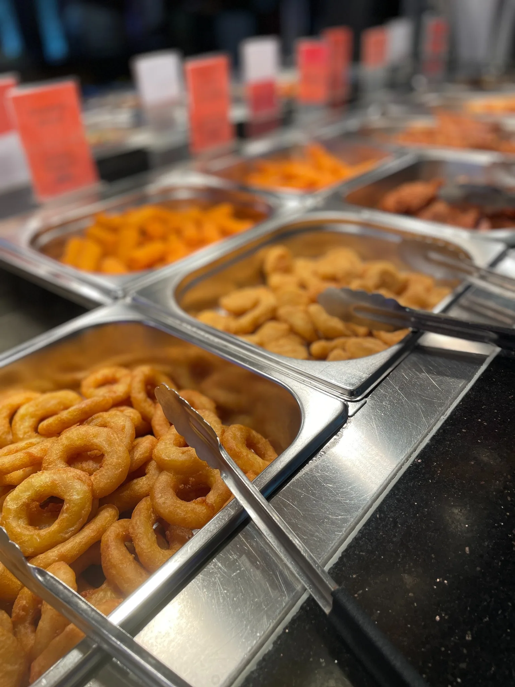

Mittagsbuffet
15,90€
12:00 – 16:00 Uhr
ohne Live Grill · außer Feiertage
ohne Live Grill · außer Feiertage
Von Vorspeisen und Suppen über Fleisch, Fisch und Gemüse bis zu Sushi, Obst, Eis und Desserts – stellen Sie sich Ihren Besuch ganz nach Geschmack zusammen.
Unser Buffet verbindet klassische chinesische Gerichte mit Sushi, frischem Gemüse, Fisch- und Fleischvariationen sowie einer großen Dessertauswahl. Ob herzhaft, leicht, vegetarisch oder süß – hier findet jeder seinen Favoriten.
Wir legen Wert auf eine abwechslungsreiche Auswahl und darauf, dass warme Gerichte regelmäßig frisch nachgelegt werden.

Mittags, am Montagabend oder mit Live Grill – wählen Sie das Buffet, das zu Ihrem Besuch passt.
Reservierungen nehmen wir telefonisch entgegen.